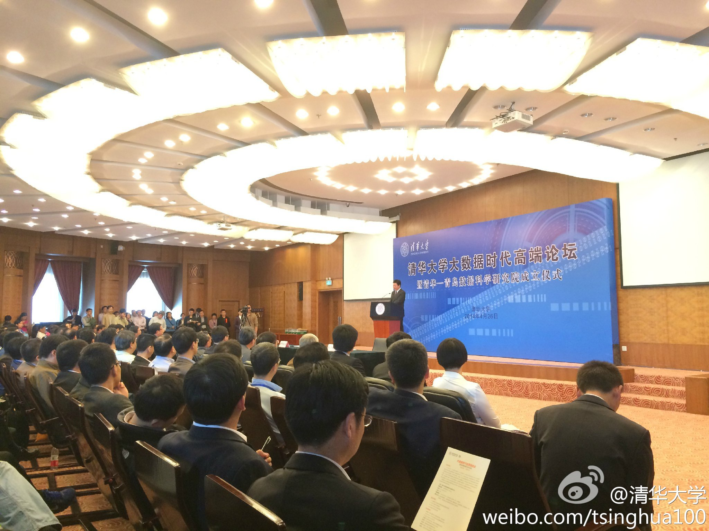
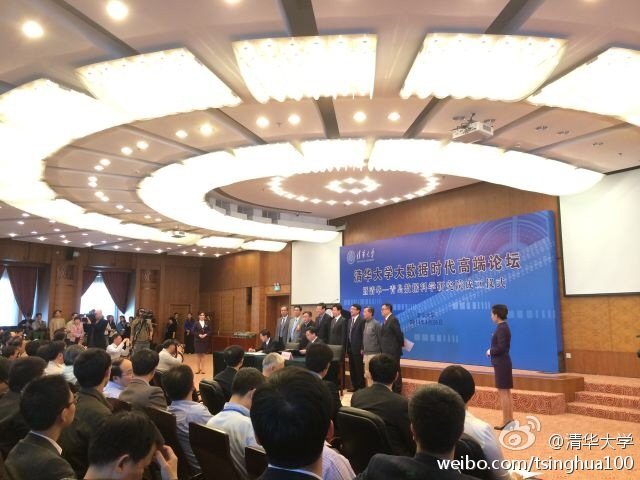

回复@刘松braving:五子登科，六神无主，七星揽月，八抬大轿？//@刘松braving:梅开二度,帽子戏法,四喜丸子@斯图亚特9:前些年足球新闻和评论创造了一个老词“连中三元”的新用法，大概是被很多人骂得现在基本不用了。还有一个词的新用法还在广泛使用--“梅开二度”。是不是这个新用法已经被广泛接受了？ 我在:Dexter Pl
高端论坛的意思是，都是一帮企事业单位的高层决策者？ //@马少平THU:火啊//@蒋东兴THU:这个报告会太🔥，提前二十分钟上楼，居然没有找到座下来在二楼报告厅看直播，一会儿居然地上都坐满了人@清华大学:#大数据论坛# 2014年4月26日下午，清华大学举办大数据时代高端论坛，宣布清华-青岛数据科学研究院正式成立，彰显其在大数据学术研究、大数据高端人才培养方面的引领角色，迎接大数据时代的到来。 
 美国Millbrae
美国Millbrae